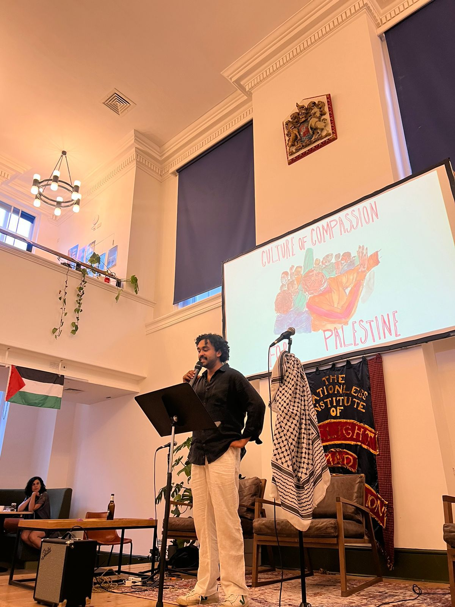

Events
Things I've made happen.
No mandate. No job title. Just the belief that something should exist — and the work to make it real.

Culture of · Fundraiser · August 2024
Culture of Compassion: a fundraiser for Palestine.
Booked the venue, brought in a guest speaker, live music, art, catering by Niba Express. Raised £1,700 in one night for Medical Aid for Palestinians and Gaza Sunbirds. One of the most satisfying things I've done.
£1,700
raised · one night · Hanbury Hall, E1


The summer gathering · Recurring
Annual BBQ & Sports Day.
Started as a small get-together. Grew into a proper summer institution — lawn games, relay races, a full sports day. 60 people at the biggest one.
60
people · biggest edition